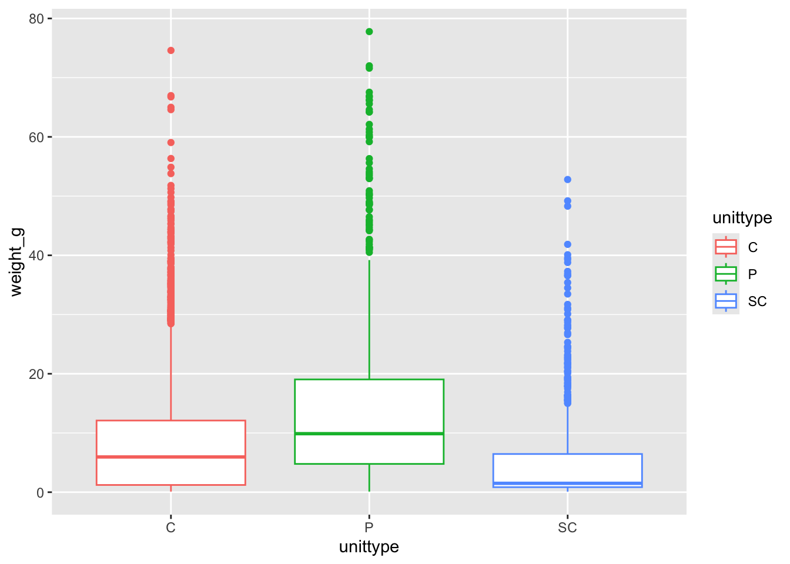
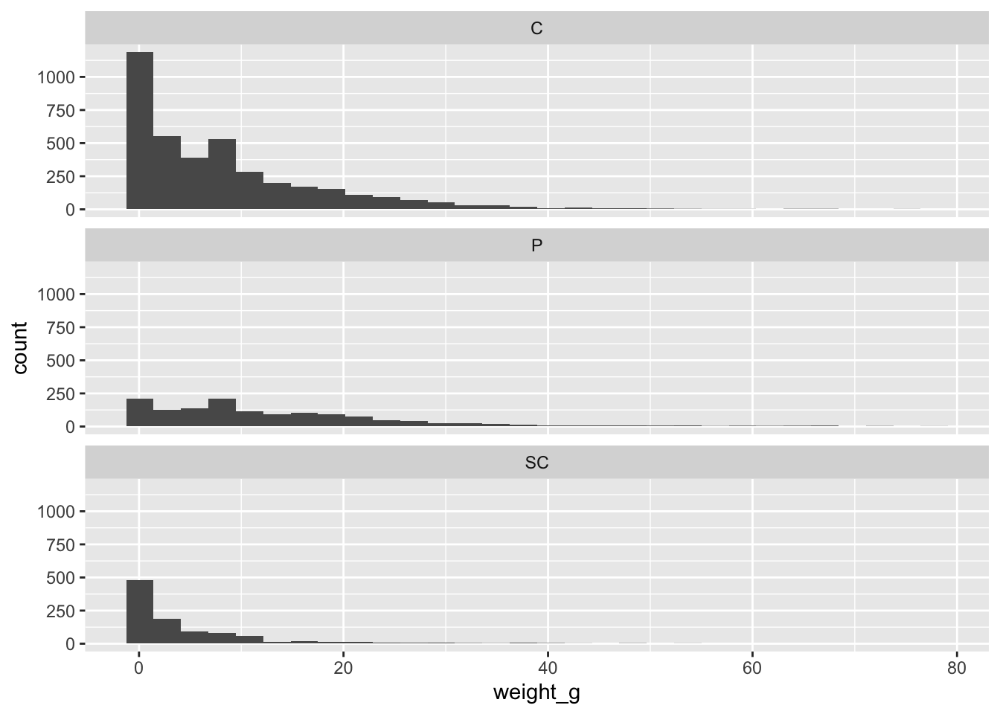

source("setup.R")6 Data Analysis: T-test and ANOVA
In this lesson you will be introduced to the process of conducting statistical tests in R, specifically t-tests and ANOVA tests for working with categorical predictor variables.
Need a refresher on stats fundamentals? We highly suggest watching this 20-minute video that goes over hypothesis testing, defining significance/p-values, and common statistical testing assumptions.
To access the dataset(s) you will be using in this lesson, we will be using a new data package called {lterdatasampler}. This package contains subsets of data from various Long Term Ecological Research (LTER) sites, designed for use in R teaching and training activities.
We we also need the {rstatix} package, which allows us to conduct various statistical tests that are ‘tidyverse’ friendly (aka, we can use them with the pipe %>%).
Note: These are new packages that we will need to add to our setup script by tacking them on to the packages <- c() list.
6.1 Explore the dataset
We will be using the and_vertebrates dataset for this lesson. Do a little exploration of this data first to understand its structure, variables and data types:
# View the data structure
glimpse(and_vertebrates)
# Explore the metadata in the Help pane
?and_vertebratesThis data set contains length and weight observations for three aquatic species in clear cut and old growth coniferous forest sections of Mack Creek in HJ Andrews Experimental Forest in Oregon. The three species are Cutthroat trout, Coastal giant salamander and Cascade torrent salamander.
6.2 t-test - Compare two means
Previous work has shown that forest harvesting can impact aquatic vertebrate biomass (Kaylor & Warren 2017). With this and_vertebrates dataset we can investigate this hypothesis, by comparing weight to forest type (clear cut or old growth). This therefore involves a test comparing the means (average weight) among two groups (clear cut and old growth forests), which then requires a t-test.
Let’s focus on conducting this test for just Cutthroat trout to reduce species-level variances in weight. Before conducting analyses, we need to clean our dataset. The steps below will filter our data to just include the trout species, and remove any NA values of weight with the drop_na() function:
#create a new variable for downstream analysis
trout_clean <- and_vertebrates %>%
# filter species (remember spelling and capitalization are IMPORTANT)
filter(species == "Cutthroat trout") %>%
# remove NA values for weight
drop_na(weight_g)Before conducting any analyses, we may want to visualize the relationship between forest type and weight, which we can do with a boxplot given we have a categorical predicator variable (forest type, aka section) and a continuous response variable (weight_g).
trout_clean %>%
ggplot(aes(x = section, y = weight_g)) +
geom_boxplot()
We don’t see too much of a difference based on this visual, but let’s conduct the statistical test to verify if our hypothesis is supported.
6.2.1 Assumptions
First however we need to check our test assumptions, which for t-tests assumes the variance of the groups is equal. We can test for equal variances with the function levene_test(), which performs a Levene’s test for homogeneity of variance across groups where the null hypothesis is that the variances are equal. In this function we specify the continuous, dependent variable (weight_g) and the predictor variable we want to test for variances between groups (section). We write this as a formula using ~ , which reads ’test if weight varies by forest section`.
trout_clean %>%
levene_test(weight_g ~ section)# A tibble: 1 × 4
df1 df2 statistic p
<int> <int> <dbl> <dbl>
1 1 12592 42.5 7.28e-11Looks like our variances are not equal, since the null hypothesis of the variance test is that they are equal and we have a (very) significant p-value. We have two options now, 1) we can transform our weight variable or 2) use the non-parametric Welch t-test which does not assume equal variances.
6.2.1.1 Variable transformation
If we look at the distribution of weight (our continuous variable), it is pretty right skewed. Therefore, we’d likely want to do a natural log transformation on the data, which works well when the data is skewed like this:
hist(trout_clean$weight_g)
Let’s perform the variances check like we did before, but on the natural log transformed values, which you can do with log() , and we can nest the functions so we only use one line of code like this:
trout_clean %>%
levene_test(log(weight_g) ~ section)# A tibble: 1 × 4
df1 df2 statistic p
<int> <int> <dbl> <dbl>
1 1 12592 0.468 0.494Now we have a high, insignificant p-value, indicating support for the null that the variances are equal. So. we can use the default t_test() function’s test which assumes equal variances, but on a natural-log transformed weight variable. For the t_test() function, it needs column names and we cannot nest a column name within a function like log(). Therefore we will need to use mutate() to create a new column for our log transformed weight variable.
The order of the variables in the t_test() function is {dependent variable} ~ {independent variable}. We use the ~ to specify a model/formula, similar to that of the levene_test(), telling the test we want to know if weight varies by forest section. We also set var.equal = TRUE to specify we know our groups have equal variances and detailed = TRUE to return the detailed results including group means (a.k.a., estimates).
trout_clean %>%
mutate(weight_log = log(weight_g)) %>%
t_test(weight_log ~ section, var.equal = TRUE, detailed = TRUE)# A tibble: 1 × 15
estimate estimate1 estimate2 .y. group1 group2 n1 n2 statistic p
* <dbl> <dbl> <dbl> <chr> <chr> <chr> <int> <int> <dbl> <dbl>
1 0.131 1.52 1.39 weig… CC OG 6798 5796 5.49 4.06e-8
# ℹ 5 more variables: df <dbl>, conf.low <dbl>, conf.high <dbl>, method <chr>,
# alternative <chr>The output of this test gives us the test statistics, p-value, and the means for each of our forest groups (estimate1 and estimate2, corresponding to group1 and group2). Given the extremely small p-value and the means of each group, we can conclude that Cutthroat trout weight was observed to be significantly higher in clear cut forests compared to old growth forests. But remember - these mean weight values are log transformed and not the raw weight in grams. The relationship can still be interpreted the same.
How does this relate to our original hypothesis?
Welch Two Sample t-test
Alternatively, instead of transforming our variable we can actually change the default t_test() argument by specifying var.equal = FALSE, which will then conduct a Welch t-test, which does not assume equal variances among groups.
trout_clean %>%
t_test(weight_g ~ section, var.equal = FALSE, detailed = TRUE) # A tibble: 1 × 15
estimate estimate1 estimate2 .y. group1 group2 n1 n2 statistic
* <dbl> <dbl> <dbl> <chr> <chr> <chr> <int> <int> <dbl>
1 1.17 9.38 8.21 weight_g CC OG 6798 5796 6.69
# ℹ 6 more variables: p <dbl>, df <dbl>, conf.low <dbl>, conf.high <dbl>,
# method <chr>, alternative <chr>While we used a slightly different method, our conclusions are still the same, finding that Cutthroat trout have significantly higher weights in clear cut forests than old growth.
6.3 ANOVA test - compare more than two means
We found a significant difference in weight among forest types, but how about channel types? The unittype variable is categorical like section was, but here we have more than two categories. With more than two categories we use an ANOVA test instead of a t-test to assess significant differences in some continuous variable among groups.
Since we found significant size differences between forest types, for the next analysis let’s just compare weight among channel types for one type of forest section to remove effects of forest type. Let’s look at clear-cut forests where trout were found to be significantly larger:
# create a new variable to use for downstream analysis
trout_cc <- trout_clean %>%
filter(section == "CC")Now let’s first look at the distribution of trout samples among different channel types in our new filtered dataset:
trout_cc %>%
group_by(unittype) %>%
count()# A tibble: 6 × 2
# Groups: unittype [6]
unittype n
<chr> <int>
1 C 3911
2 P 1400
3 R 97
4 S 7
5 SC 1000
6 <NA> 383We see there are quite a few samples with missing information for channel type. Also, there are some groups that have relatively low sample size. For the sake of this lesson, let’s just keep the three most abundant channel types: C (cascade), P (pool), and SC (side channel).
6.3.1 Assumptions
Normality
ANOVA assumes normal distributions within each group. Here our group sample sizes are >30 each which can be considered as large enough to not worry about this assumption. In fact the Shapiro-Wilk test won’t even operate if your group sizes are greater than 5,000. But, we can use the shapiro_test() function along with group_by() to test for normality within each channel group.
trout_cc %>%
group_by(unittype) %>%
shapiro_test(weight_g)# A tibble: 3 × 4
unittype variable statistic p
<chr> <chr> <dbl> <dbl>
1 C weight_g 0.794 3.48e-57
2 P weight_g 0.847 1.01e-34
3 SC weight_g 0.632 8.64e-42Since the null hypothesis of the Shapiro-Wilk test is that the data is normally distributed, these results tell us all groups do not fit a normal distribution for weight.
Equal Variances
To test for equal variances among more than two groups, it is easiest to use a Levene’s Test like we did earlier:
trout_cc %>%
levene_test(weight_g ~ unittype)# A tibble: 1 × 4
df1 df2 statistic p
<int> <int> <dbl> <dbl>
1 2 6308 126. 3.19e-54Given this small p-value, we see that the variances of our groups are not equal.
Therefore, after checking out assumptions we need to perform a non-parametric ANOVA test, which is the Kruskal-Wallis test. We can do this with the kruskal_test() function specifying a formula like we have for previous tests to see if weight varies by channel (aka unittype).
trout_cc %>%
kruskal_test(weight_g ~ unittype)# A tibble: 1 × 6
.y. n statistic df p method
* <chr> <int> <dbl> <int> <dbl> <chr>
1 weight_g 6311 542. 2 2.05e-118 Kruskal-WallisOur results here are highly significant, meaning that at least one of our group means is significantly different from the others.
Let’s visualize the spread of weight among each group, looking at group summaries with a geom_boxplot() and group weight distributions with geom_histogram() and facet_wrap()
trout_cc %>%
ggplot(aes(x = unittype, y = weight_g, color = unittype)) +
geom_boxplot()
trout_cc %>%
# since we are making a histogram only need an 'x' variable
ggplot(aes(x = weight_g)) +
geom_histogram() +
# separate plot by unittype
facet_wrap(~unittype, ncol = 1)
6.3.1.1 Post-Hoc Analysis
Now ANOVAs don’t tell us which groups are significantly different, for that we would need to use a post-hoc test. Since we used the non-parametric Kruskal-Wallace test, we can use the associated Dunn’s test for multiple comparisons to assess significant differences among each pair of groups.
IMPORTANT: if your data MEETS the ANOVA assumptions you would use the anova_test() function instead, and tukey_hsd() as the associated post-hoc test.
trout_cc %>%
dunn_test(weight_g ~ unittype)# A tibble: 3 × 9
.y. group1 group2 n1 n2 statistic p p.adj p.adj.signif
* <chr> <chr> <chr> <int> <int> <dbl> <dbl> <dbl> <chr>
1 weight_g C P 3911 1400 15.2 5.05e- 52 1.01e- 51 ****
2 weight_g C SC 3911 1000 -13.7 1.83e- 42 1.83e- 42 ****
3 weight_g P SC 1400 1000 -23.1 4.18e-118 1.25e-117 **** This result shows us an adjusted p-value (for multiple comparisons) for each combination of groups, where a significant value represents a significant difference in weight between those two channel types. Our results here show that all channel types are significantly different in trout weight.
6.4 Exercises
Each question requires you to carry out a statistical analysis to test some hypothesis related to the and_vertebrates dataset. To answer each question fully:
Include the code you used to clean the data and conduct the appropriate statistical test. (Including the steps to assess and address your statistical test assumptions).
Report the findings of your test.
Include an appropriate figure showing the patterns in the data associated with the test.
1. Conduct a t-test similar to the one we carried out earlier in this lesson plan, but test for a difference in snout-vent length (length_1_mm) between forest types (section) for the Coastal giant salamander. (10 pts.)
2. Conduct an ANOVA test to test for differences in snout-vent length between channel types (unittype, only using C, P, and SC channel types) for the Coastal Giant salamander. Remember to check your test assumptions and use the appropriate test based on your findings. You must also conduct the associated post-hoc test and report which groups are significantly different from each other, if any (10 pts.)
6.4.1 Acknowledgements
Thanks to the developers of lterdatasampler for providing the data set and vignettes that helped guide the creation of this lesson plan.
6.4.2 Citations
Data Source: Gregory, S.V. and I. Arismendi. 2020. Aquatic Vertebrate Population Study in Mack Creek, Andrews Experimental Forest, 1987 to present ver 14. Environmental Data Initiative. https://doi.org/10.6073/pasta/7c78d662e847cdbe33584add8f809165
Kaylor, M.J. and D.R. Warren. 2017. Linking riparian shade and the legacies of forest management to fish and vertebrate biomass in forested streams. Ecosphere 8(6). https://doi.org/10.1002/ecs2.1845